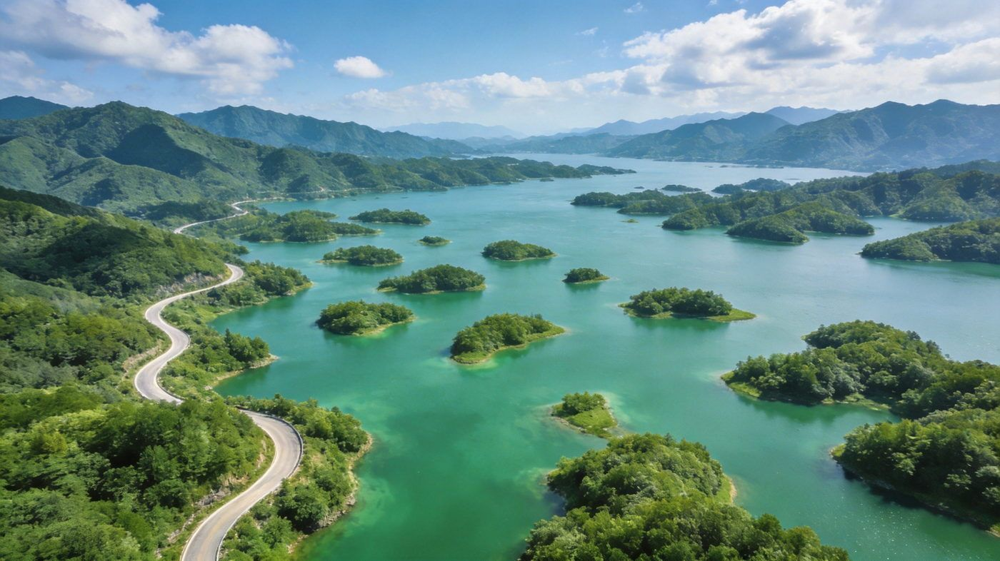
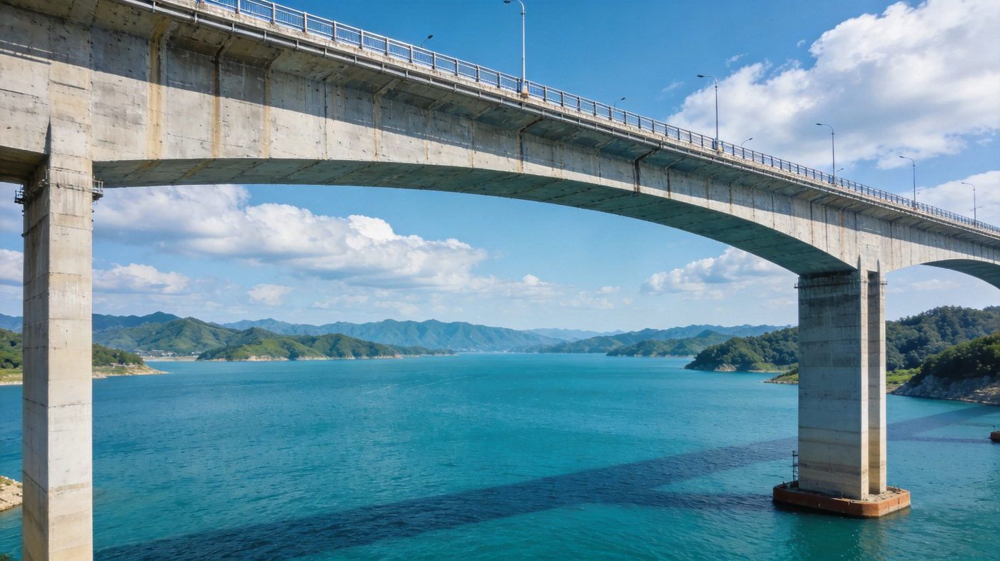
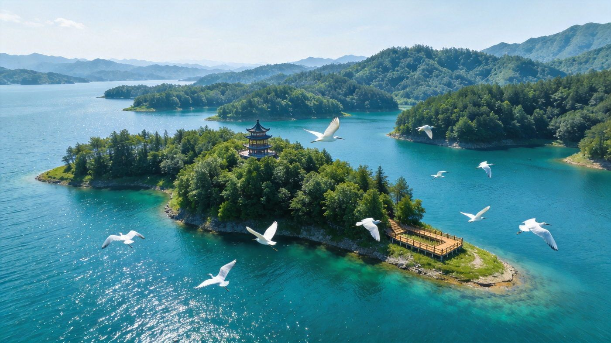
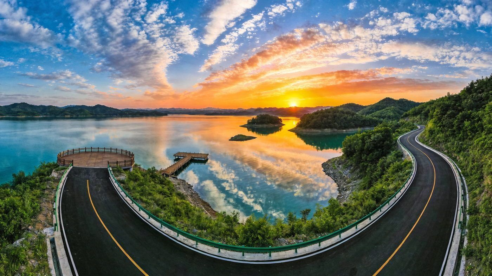
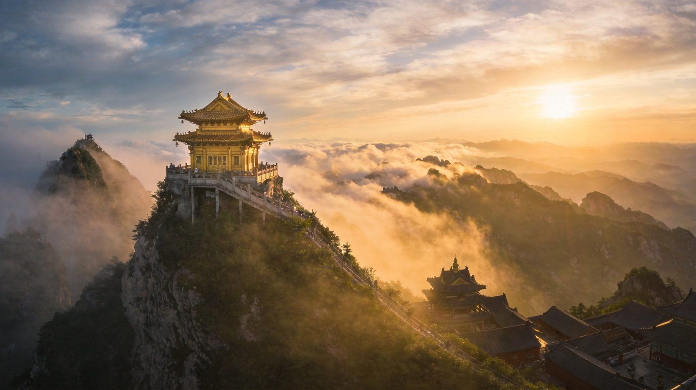

丹江口水库
千岛画廊 · 环库公路的明珠
沿环库公路行驶约 15 公里，抵牛河林区一带的观景平台，登高俯瞰，上百座翠绿小岛如翡翠般散落在碧蓝的丹江口水库上，山水相连、「十米有景观，百米现画廊」，被网友称为「湖北的小千岛湖」。
👍 必去理由：免费开放，自驾直达观景台，360° 俯瞰群岛，是环库公路最出片的点位。清晨薄雾、晴天都好看，建议早去人少光线好。
配图：原创生成 · 无版权风险
一座被「亚洲天池」丹江口水库环抱的水都，429 公里环库公路被称为「中国最美山水公路」，把千岛画廊、百喜岛、大坝、静乐宫串成翡翠项链，还能顺路直上武当山。求快走 2 天环库版，加一天上 3 天武当版。1–3 人出行均适用，含行程 / 住宿 / 美食 / 预算 / 交通方式对比。
核心策略：D1 大坝+千岛画廊+碧水连天，D2 百喜岛+静乐宫，自驾沿环库公路边走边停。
环库两天齐全，再加一整天给武当山「天下第一仙山」，看金顶云海与太和宫。
把丹江口最有辨识度的 5 个点单独拎出来说清楚——值不值得去、怎么玩、藏在哪。

沿环库公路行驶约 15 公里，抵牛河林区一带的观景平台，登高俯瞰，上百座翠绿小岛如翡翠般散落在碧蓝的丹江口水库上，山水相连、「十米有景观，百米现画廊」，被网友称为「湖北的小千岛湖」。
👍 必去理由：免费开放，自驾直达观景台，360° 俯瞰群岛，是环库公路最出片的点位。清晨薄雾、晴天都好看，建议早去人少光线好。
配图：原创生成 · 无版权风险

巍巍大坝锁住汉江丹江激流，化作「亚洲天池」的万顷碧波，是南水北调中线的核心水源工程。坝顶观景台可鸟瞰辽阔水库与丹江口城区，感受「一库清水向北流」的分量。
👍 必去理由：了解南水北调、致敬水利史诗的地标。观景需付费/预约；旁边南水北调中线工程纪念园可顺游，了解工程与库区移民故事。
配图：原创生成 · 无版权风险

镶嵌在丹江口「小太平洋」上的湖心岛，森林覆盖率高、栈道蜿蜒，白鹭、鸬鹚等百余种鸟类在此栖息，是观鸟与露营感十足的小岛。登岛漫步、吹风听潮，特别出片。
👍 必去理由：需在沧浪海旅游港乘船上岛（含船票约 80–120 元/人），小岛不大、20 分钟可逛完，但坐在岸边吹风、拍湖景很惬意；适合慢节奏。
配图：原创生成 · 无版权风险

沿环库公路行驶时不容错过的观景平台：水面如镜、碧波无浪，傍晚夕阳将湖面、群岛与晚霞染成一片赤红，被称赞为「夕阳无限好」的经典机位。
👍 必去理由：免费，自驾直达。建议傍晚 4–6 点抵达，看晚霞洒满湖面；也是骑行环库绿道的歇脚点。
配图：原创生成 · 无版权风险

距丹江口不远的世界文化遗产、道教名山。金顶铜铸鎏金殿立于峰巅，云雾缭绕间确有「天下第一仙山」的气势；太和宫、太子坡、紫霄宫、南岩宫等古建庄严大气。
👍 必去理由：3 天版强烈推荐加一天。门票约 140 + 观光车 100 = 240 元，索道另计；建议晴天早上去金顶看云海，体力一般可选索道上山。
配图：原创生成 · 无版权风险
丹江口景点分散、环库公路是玩法核心，怎么走差异很大。下面把三种方式讲透，帮你做选择。
| 维度 | 🚗 自驾 | 🚙 包车 | 🚌 跟团 |
|---|---|---|---|
| 核心体验 | 环库公路想停就停，追日落、寻小众观景台最自由，自驾本身就是玩法 | 坐车看风景、司机熟路，同样灵活，可点对点安排各景点 | 线路固定、省心省力，但环库精华段的「边走边停」会被压缩 |
| 适合 喜欢开车、享受驾驶乐趣的游客 | 适合 不想开车、但想保留自由度的 2–3 人团 | 适合 带长辈小孩、图省心、时间紧的游客 | |
| ✔ 灵活度高、无等待、成本可控 | ✔ 不用自己开山路、可拼车分摊 | ✔ 全程有人安排、讲解、不操心 | |
| 费用与成本 | 租车+油费+过路，2–3 人分摊人均更低 | 按天计费（约 300–500 元/天 含司机），人数少时人均偏高 | 人均约 500–900 元起，包住宿门票省心 |
| 自驾 2 天油费+租金约 400–800 元/车 | 包车 2 天约 600–1000 元/车 | 跟团报价浮动大，注意隐形加点 | |
| ✔ 3 人拼车人均最省 | ✘ 人少时人均过高 | ✘ 可能有购物/自费项目 | |
| 注意事项 | 环库公路弯多限速，新手谨慎；部分观景台停车位少 | 选正规平台/司机，确认车型与是否含油费过路 | 问清是否含观光车/索道、有无购物点 |
| 武当山上山需换乘观光车，自驾只能到山门 | 包车司机大多不进景区，核心游玩仍靠自己 | 跟团上山同样换乘，行程节奏偏赶 | |
| ✘ 需驾驶经验、累 | ✔ 折中推荐：2–3 人包车最平衡 | ✘ 深度体验略打折 | |
| 💡 一句话建议：2–3 人且享受开车 → 自驾；不想开车想自由 → 包车（2–3 人拼车最划算）；带老人小孩图省心 → 跟团。 | |||
三档价位，均为 2 人房计，多人出行请按需调整。
丹江口水库盛产鲜鱼，口味以辣为主，按份点即可。
含 1–3 人出行说明；区间为保守–宽松，实际以淡旺季与选择为准。
| 项目 | 2天环库版 | 3天武当版 |
|---|---|---|
| 大交通（往返，省内/邻省） | 约 100–300 | 约 100–300 |
| 住宿 | 1 晚 50–160 | 2 晚 150–350 |
| 餐饮 | 约 150–250 | 约 250–400 |
| 景点门票（大坝/百喜岛船/静乐宫） | 约 120–220 | 约 150–260 |
| 交通/租车/包车（人均分摊） | 约 150–300 | 约 200–350 |
| 可选（武当山） | — | 约 240–400 |
| 合计 · 人均 | 约 600–1000 | 约 1100–1700 |